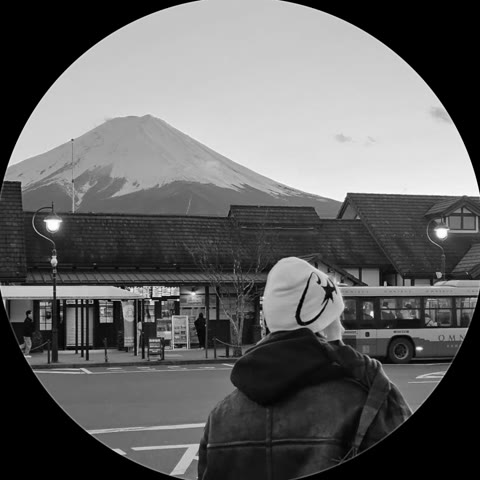

ņikita
@n1k.co
building 2FOLD.
ai agency · riga
rīga
2FOLD vienā skatienāonline
24/7zvani saņem
atbildi
atbildi
3valodas
LV · EN · RU
LV · EN · RU
7dienas
bez maksas
bez maksas
neviens klients vairs neaiziet pie konkurenta
for builders
Local Automation Kitsgatavi kiti automatizāciju būvēšanai · whop
kits